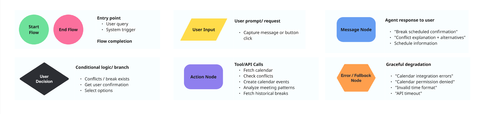
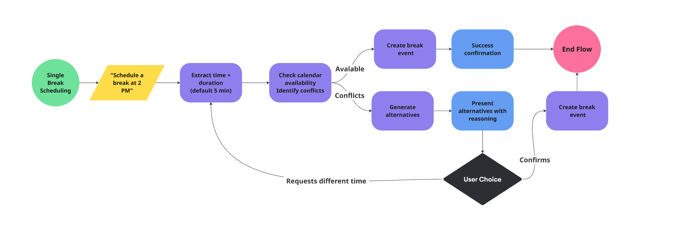
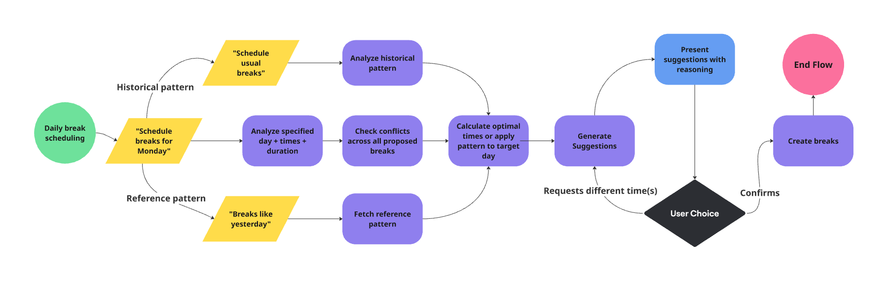

Designing Adaptive Conversational
Flows for an AI Health Coach
Designing context-aware conversation patterns that adapt persuasion techniques to schedule stress
Role
Product designer & AI engineer (founding team)
Target
Pilot-ready system for enterprise wellness programs (~200 users)
Tools
Conversation design, behavioral science, PydanticAI
Problem
The gap in workplace physical health
1.7 billion people worldwide suffer from musculoskeletal disorders caused by prolonged sitting (WHO). The solution—regular movement breaks—requires sustained behavior change, which existing workplace tools fail to support:
- Movement apps (Stretchy, Desk Yogi): Evidence-based exercises but no calendar awareness, requiring users to remember and interrupt work
- Calendar assistants (x.ai, Reclaim): Schedule breaks but provide no movement guidance or adaptation to physical needs
- Wellness chatbots (Headspace Bot, Calm): Generic reminders with static prompts regardless of schedule stress or context
The opportunity: Preventing musculoskeletal disorders through movement requires conversational AI that adapts both persuasion strategy and movement guidance to real-time schedule intensity - but no existing system does this.
The design challenge
Starting from zero, how do you design conversational flows for a multi-agent health coaching system that:
- Adapt persuasion strategy based on schedule stress (meeting-heavy days need different approaches than light schedules)
- Guide users toward active movement breaks without feeling pushy or interruptive
- Handle multiple conversation paths (queries, scheduling, conflicts, rescheduling)
- Maintain natural conversation across multiple turns while managing complex state
- Apply behavioral science systematically to movement behavior change, not just "friendly tone"
- Create reusable conversation patterns for other health coaching agents (reminders, lifestyle coaching)
Success criteria for pilot
- Agent feels "helpful, not pushy" in qualitative testing
- Multi-turn conversations complete in ≤3 turns
- Conversation flows handle edge cases gracefully (missing info, conflicts, API failures)
- 95% scheduling accuracy (no double-bookings, correct buffers)
- System ready for deployment with ~200 users at a pilot government company
Approach
Research foundation
The founding team conducted initial user research (15 interviews + surveys with 50+ desk workers) revealing key insights for conversational flow design:
- Pattern references dominate: "Like yesterday", "my usual breaks", "same as last week" appeared in 40% of conversations—users think in patterns, not discrete time slots
- Incomplete initial requests: 60% lacked time, duration, or date ("Schedule a break")—flows need progressive clarification
- Multi-turn refinement expected: Users modify suggestions conversationally ("Move the 1 PM to 2 PM") rather than starting over
- Schedule queries as entry point: Users would use the AI health coach for general schedule queries—creating an opportunity to suggest break scheduling when none exist
- Efficiency target: Scheduling should complete in ≤3 turns
- Conflict handling must be conversational: Alternatives with reasoning, not just "unavailable"
Design rationale
Mapping complete conversation paths before implementation served three purposes. First, understanding conversation patterns shaped technical architecture: what data must persist between turns (pending suggestions, conflict alternatives, conversation context), how agents communicate decisions to the coordinator (structured outputs), and which calendar operations were needed. Second, each decision node in the flows revealed edge cases that became test scenarios directly. Third, could demonstrate conversation paths to the founding team using mockups before implementation.
Query → suggestion integration is critical to the behavioral science layer. Users who ask "What's my schedule today?" often discover they have no breaks planned—the ideal moment to offer value while they're already engaged in scheduling.
Flow design methodology

Node types used in conversational flow design
Core intent mapping
From user research and prototype testing, I mapped all user needs to 5 primary intents that would structure the conversational system.
Intent hierarchy: Organized by time scope (single → daily → multi-day) as complexity increases with coordination across more time units. Reschedule is distinct (identify existing → modify vs. create new). Query serves a dual purpose as both information retrieval and a primary entry point for behavior change.
Flow 1: Single break scheduling

Key design decisions:
- Default duration: 5 minutes if unspecified
- Conflict alternatives in same response: Generate 2-3 nearby times with reasoning
- Pattern support: "Same break as yesterday" requires historical lookup → apply to today
Example:
Flow 2: Daily break scheduling

Key design decisions:
- Batch conflict checking: Present entire adapted plan in single response
- Partial conflict handling: Show available breaks + alternatives for conflicts
Examples:
Advanced patterns
Complex reference resolution and error recovery patterns ensure robust, intelligent conversations.
Complex reference resolution
Reference types: Specific date ("Like last Friday"), historical pattern ("My usual"), comparative optimization ("Better than yesterday")
Error recovery
Error types: Missing information, invalid reference, calendar access failure
Flow coverage
Flows designed
5 core intents + 2 supporting (complex reference resolution, error recovery)
Turn completion target
Complete conversations in 3 turns or less through batched suggestions with reasoning
Edge cases covered
Conflicts, missing info, invalid references, technical failures, ambiguous requests